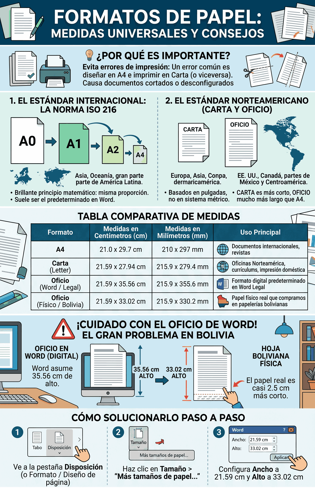

Formatos de Papel: Medidas Universales
Descubre de dónde vienen las medidas A4, Carta y Oficio, y por qué elegir la correcta es vital para evitar dolores de cabeza al imprimir.

1. El Estándar Internacional: La norma ISO 216
En la mayor parte del mundo, los tamaños de papel se rigen por la norma ISO 216, originada en Europa. Su principio matemático es brillante: todos los tamaños mantienen la misma proporción. Si tomas un papel A0 y lo doblas a la mitad, obtienes el A1. Si lo vuelves a doblar, el A2, y así sucesivamente hasta llegar al famoso A4.
Esta medida es el estándar en Europa, Asia, Oceanía y en gran parte de América Latina. Por eso, suele ser el formato predeterminado en Word en muchas de esas regiones.
2. El Estándar Norteamericano (Carta y Oficio)
En Estados Unidos, Canadá y partes de México y Centroamérica, no se utiliza el sistema métrico ISO. En su lugar, utilizan formatos heredados de la industria papelera tradicional, basados en pulgadas.
Los más famosos son el tamaño Carta (Letter) y el tamaño Oficio (Legal). Son ligeramente más anchos y de diferentes alturas en comparación al A4 (el Carta es más corto, el Oficio es mucho más largo).
3. Comparativa de Medidas
A continuación, te mostramos una tabla comparativa para que tengas claras las dimensiones exactas de cada tipo de hoja:
| Formato | Medidas en Centímetros (cm) | Medidas en Milímetros (mm) | Uso Principal |
|---|---|---|---|
| A4 | 21.0 x 29.7 cm | 210 x 297 mm | Documentos estándar internacionales, revistas, cuadernos. |
| Carta (Letter) | 21.59 x 27.94 cm | 215.9 x 279.4 mm | Oficinas de Norteamérica, currículums, impresión doméstica. |
| Oficio (Word / Legal) | 21.59 x 35.56 cm | 215.9 x 355.6 mm | El formato digital predeterminado en Word (Legal). |
| Oficio (Físico / Bolivia) | 21.59 x 33.02 cm | 215.9 x 330.2 mm | El papel físico real que compramos en papelerías en Bolivia. |
El Gran Problema del Tamaño "Oficio" en Bolivia
Existe una confusión muy frecuente que arruina muchas impresiones. El tamaño físico de las hojas "Oficio" que compramos en las papelerías de Bolivia mide 21.59 cm de ancho por 33.02 cm de alto. Sin embargo, cuando seleccionas "Oficio" (o Legal) en Word, el programa asume que el papel mide 35.56 cm de alto.
¿Cuál es el resultado? Si dejas la configuración por defecto de Word y llenas toda la página, al imprimir tu documento en una hoja boliviana, los últimos centímetros del texto quedarán cortados o se imprimirán al ras del papel, porque el papel real es casi 2 centímetros y medio más corto que el digital.
Cómo solucionarlo paso a paso:
Para evitar este problema y asegurarte de que tus documentos salgan perfectos, no utilices el tamaño "Oficio" o "Legal" que viene por defecto. Sigue estos pasos para crear una medida exacta:
- Ve a la pestaña Disposición (o Formato / Diseño de página).
- Haz clic en el botón Tamaño y selecciona la opción del final que dice "Más tamaños de papel...".
- En la ventana emergente, cambia el ancho a 21,59 cm y el alto a 33,02 cm (o simplemente 33 cm para dejar un pequeño margen extra de seguridad).
¿Cuál debo usar entonces?
La elección del formato dependerá principalmente del tipo de trámite a realizar y de las hojas que tengas a mano:
- Si vas a imprimir en casa/oficina: Fíjate qué resma de papel compraste. Si la caja dice "Carta", configura tu Word en Carta. Si vas a usar hojas Oficio, aplica el tamaño personalizado de 33,02 cm.
- Documentos Internacionales: Si vas a enviar un documento digital (como un PDF) a otro país, el A4 es la apuesta más segura a nivel global.